Data Structures and Algorithms
with Object-Oriented Design Patterns in C++
Data Structures and Algorithms
with Object-Oriented Design Patterns in C++In order to better understand the actual performance of the various sorting algorithms presented in this chapter, it is necessary to conduct some experiments. Only by conducting experiments is it possible to determine the relative performance of algorithms with the same asymptotic running time.
To measure the performance of a sorting algorithm,
we need to provide it with some data to sort.
To obtain the results presented here,
random sequences of unsigned integers were sorted.
I.e., for each value of n,
the RandomNumberGenerator class defined in Section  was used to create a sequence of n integers.
In all cases (except for bucket sort)
the random numbers are uniformly distributed
in the interval 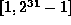.
For the bucket sort the numbers are uniformly distributed in 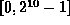.
was used to create a sequence of n integers.
In all cases (except for bucket sort)
the random numbers are uniformly distributed
in the interval 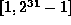.
For the bucket sort the numbers are uniformly distributed in 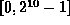.
Figures , and show the actual running times
of the sorting algorithms presented in this chapter.
These running times were measured on a Sun SPARCstation 5,
Model 85, which has an 85 MHz clock, and 32MB RAM.
The programs were compiled using the SPARCompiler C++ 4.1 compiler,
and run under the Solaris 2.3 operating system.
The times shown are user CPU times, measured in seconds.
Figure shows the running times of the  sorts
for sequences of length n, 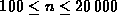.
Notice that the bubble sort has the worst performance
and that the binary insertion sort has the best performance.
Figure clearly shows that, as predicted,
binary insertion is better than straight insertion.
Notice too that all of the
sorts
for sequences of length n, 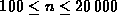.
Notice that the bubble sort has the worst performance
and that the binary insertion sort has the best performance.
Figure clearly shows that, as predicted,
binary insertion is better than straight insertion.
Notice too that all of the  sorts require in excess of two minutes
of execution time to sort an array of 20000 integers.
sorts require in excess of two minutes
of execution time to sort an array of 20000 integers.
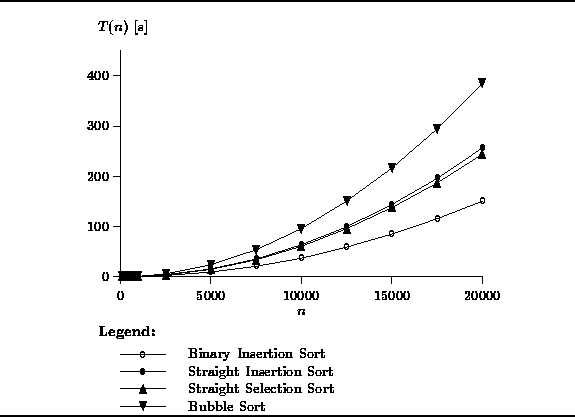
Figure: Actual Running Times of the  Sorts
Sorts
The performance of the  sorts is shown in Figure .
In this case, the length of the sequence varies between n=100
and .
The graph clearly shows that the
sorts is shown in Figure .
In this case, the length of the sequence varies between n=100
and .
The graph clearly shows that the  algorithms are significantly
faster that the
algorithms are significantly
faster that the  ones.
All three algorithms sort 100000 integers in under 6 seconds.
Clearly, quick sort is the best of the three,
whereas the two-way merge sort and heap sort have similar running times.
ones.
All three algorithms sort 100000 integers in under 6 seconds.
Clearly, quick sort is the best of the three,
whereas the two-way merge sort and heap sort have similar running times.
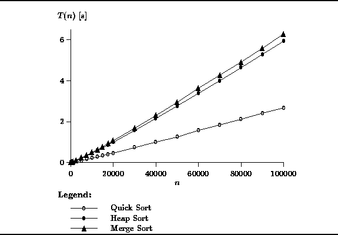
Figure: Actual Running Times of the  Sorts
Sorts
Figure shows the actual running times for the bucket sort
and radix sort algorithms.
Both these algorithms were shown to be O(n) sorts.
The graph shows results for n between 100 and  .
The universe used to test bucket sort was 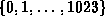.
I.e., a total of m=1024 counters (buckets) were used.
For the radix sort, 32-bit integers were sorted by using the radix R=256
and doing p=4 sorting passes.
.
The universe used to test bucket sort was 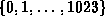.
I.e., a total of m=1024 counters (buckets) were used.
For the radix sort, 32-bit integers were sorted by using the radix R=256
and doing p=4 sorting passes.
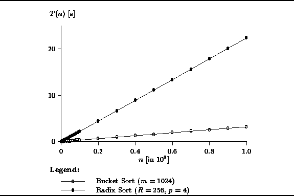
Figure: Actual Running Times of the O(n) Sorts
Clearly, the bucket sort has the best running time. For example, it sorts one million 10-bit integers in about 5 seconds. Radix sort performs extremely well too. It sorts one-million 32-bit integers in about 20 seconds. This is a factor of four slower than the bucket sort due largely to the fact that radix sort does four sorting passes whereas bucket sort requires only one.
 Copyright © 1997 by Bruno R. Preiss, P.Eng. All rights reserved.
Copyright © 1997 by Bruno R. Preiss, P.Eng. All rights reserved.